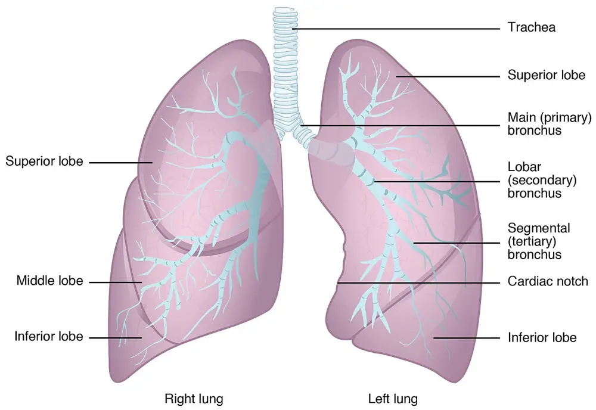
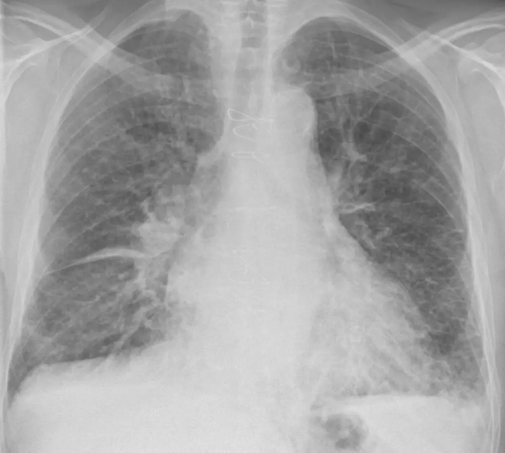

La dyspnée désigne une expérience du patient, et non une mesure. L'American Thoracic Society (ATS) l'a définie en 2012 comme une expérience subjective d'inconfort respiratoire, car elle repose sur des sensations distinctes d'intensité variablen2. Cette expérience dépend de nombreux facteurs physiologiques, mais aussi psychologiques et sociaux, et elle entraîne des réponses secondaires physiologiques et comportementalesn2. Comme la dyspnée est subjective, elle ne peut par définition être caractérisée que par le sujet qui en souffren2. Le médecin doit donc écouter la description du patient avant de chercher un signe objectif.
2. Épidémiologie (Suisse, puis Europe)
La dyspnée est un motif fréquent, car elle touche jusqu'à 25 % des patients de plus de 70 ans dans les études populationnellesn2. Elle représente environ 2,5 % des consultations chez le médecin de famille, ainsi qu'environ 8,4 % des admissions aux urgencesn2. Dans les données de soins primaires, elle motive 4 % de toutes les consultationsn13. La fréquence dépend donc du lieu de recueil, et le médecin doit raisonner selon son contexte d'exercice.
Les chiffres de premier recours viennent de deux sources européennes. La première est l'étude allemande SESAM (étude de médecine générale en Saxe) 2, où 93 patients sur 8,877 consultaient pour dyspnée, soit 1,05 %n13. La seconde est le Transition Project néerlandais, où 3,9 % des patients consultaient pour dyspnéen13. Ainsi, le taux de consultation varie d'environ 1,0 % à 2,5 % pour les dyspnées nouvelles selon l'étuden13.
L'étude saxonne a recueilli les consultations de médecins généralistes saxons du 1er octobre 1999 au 30 septembre 2000n13. Le recueil portait sur un patient sur dix, car un jour par semaine était tiré au hasard, et 8,877 patients ont été inclusn13.
La prévalence de consultation atteignait 1,7 % chez les patients de plus de 75 ans, et elle était légèrement plus basse chez l'homme (0,9 %) que chez la femme (1,1 %)n13. Le piège d'interprétation est l'effectif réduit, car seuls 93 patients dyspnéiques ont été analysés, ce qui limite la précision des fréquences par diagnosticn13.
Le Transition Project a examiné 149 238 patients entre 1985 et 2003n13. Environ quatre pour cent d'entre eux, soit 6,490 patients, déclaraient une dyspnée comme motif de consultationn13.
Parmi eux, 3743 patients, soit 57,7 %, consultaient pour la première fois pour dyspnée, tandis que 2,747 avaient une dyspnée déjà connuen13. La série « dyspnée nouvelle » est donc la référence qui permet d'ordonner les causes de premier recours dans cette monographie.
L'âge et le sexe modifient le risque. Le rapport hommes-femmes est d'environ un pour un, et la dyspnée est plus fréquente chez les petits enfants de 0 à 4 ans et chez les adultes de plus de 64 ansn13. La prévalence augmente avec l'âge, car les maladies cardiaques ou pulmonaires chroniques sont plus fréquentes chez les personnes âgéesn13. La moitié des patients consultent pour une dyspnée qu'ils n'avaient jamais présentée auparavantn13.
Les causes se répartissent différemment selon le lieu de soins, car les urgences et le cabinet ne voient pas les mêmes patients. Aux urgences, une cohorte européenne et asiatique-pacifique de 5569 patients a trouvé l'infection des voies respiratoires inférieures (24,9 %) en têten18. Elle a trouvé ensuite l'insuffisance cardiaque (17,3 %), l'exacerbation de bronchopneumopathie chronique obstructive (15,8 %) et l'asthme (10,5 %)n18. En médecine de premier recours, la bronchite aiguë est le diagnostic le plus fréquentn13.
L'étude observationnelle prospective a inclus des patients consécutifs consultant aux urgences avec la dyspnée pour motif principaln18. Elle fournit les rangs un à quatre de la liste de cette monographie, car elle reflète les urgences européennesn18.
Les cas d'infection, d'insuffisance cardiaque et d'exacerbation de bronchopneumopathie chronique obstructive étaient plus nombreux dans la population européenne, alors que l'asthme était plus fréquent dans la population d'Australasien18. La conclusion rappelle que les maladies chroniques expliquent une part majeure des dyspnées vues aux urgencesn18.
La bronchite aiguë représente 24,73 % des dyspnées de l'étude SESAM 2 et 24,51 % des dyspnées nouvelles du Transition Projectn13.
Dans cette bronchite aiguë, le symptôme dominant n'est pas grave en soi, mais elle gonfle le chiffre des consultations et sert de diagnostic discriminant face à la pneumonie. En effet, la toux, la fièvre, les expectorations et la dyspnée avec des râles ne permettent pas de distinguer une pneumonie d'une bronchite aiguën15. Dans les données de soins primaires, 69,9 % des résultats de consultation relevaient de l'appareil respiratoire et 15 % de l'appareil cardiovasculairen13.
Les maladies cardiorespiratoires dominent partout, car dans 85 % des cas la cause d'une dyspnée chronique est cardiorespiratoiren2. L'asthme, la bronchopneumopathie chronique obstructive et l'insuffisance cardiaque représentent à elles trois 85 % des casn2. Les urgences vitales, comme l'infarctus du myocarde, sont rarement présentes en consultation de médecine généralen13.
Chez le sujet âgé, la dyspnée aiguë est souvent une insuffisance respiratoire aiguë à causes multiples. Dans une série parisienne de 514 patients âgés en moyenne de 80 ans, l'œdème pulmonaire cardiogénique est la cause la plus fréquente avec 43 %n10. La pneumonie communautaire (35 %), l'exacerbation d'une maladie respiratoire chronique (32 %), l'embolie pulmonaire (18 %) et l'asthme aigu (3 %) suiventn10. Ainsi, 47 % des patients avaient plus de deux diagnostics, ce qui rend le raisonnement difficilen10.
La mortalité hospitalière de cette série atteignait 16 %n10. Un diagnostic manqué aux urgences a été noté chez 101 patients, soit 20 %n10.
Un traitement inapproprié est survenu chez 162 patients (32 %) et s'associait à une mortalité plus élevée, 25 % contre 11 %n10. Le piège d'examen est donc de traiter l'œdème pulmonaire sans chercher la pneumonie ou l'embolie pulmonaire associées.
Le pronostic dépend donc de la cause. Aux urgences, 5,5 % des patients entrent en soins intensifs, la mortalité aux urgences est de 0,6 % et la mortalité hospitalière globale de 5,0 %n18. Cette mortalité hospitalière atteint 8,7 % pour l'infection respiratoire basse, 7,6 % pour l'insuffisance cardiaque et 5,6 % pour la bronchopneumopathie chronique obstructiven18. De plus, la dyspnée est un meilleur marqueur de mortalité que la douleur angineuse et le volume expiratoire maximal par seconde dans l'insuffisance cardiaque et la bronchopneumopathie chronique obstructiven2.
Des données suisses complètent le tableau, car la pneumonie et la thrombose y sont bien décrites. L'incidence annuelle de la pneumonie communautaire varie entre 1,07 et 1,2 cas pour 1000 habitants, et monte jusqu'à 14 cas pour 1000 chez les plus de 65 ansn15. L'embolie pulmonaire est présente chez environ un tiers des thromboses veineuses profondes, dont l'incidence atteint 2 à 7 pour 1000 personnes par an après 70 ansn12. En hiver, la proportion d'infections respiratoires basses est plus élevée et atteint 35,1 % parmi les patients dyspnéiques des urgencesn9.
514 patients de 65 ans ou plus en insuffisance respiratoire
2006
Ray et collaborateurs
2,5 % des consultations ; 8,4 % des urgences
Dyspnée chronique
2020
Revue Médicale Suisse
L'enjeu de santé publique tient au vieillissement, car la population de 65 à 80 ans devrait doubler d'ici 2030, avec plus de 10 % d'insuffisance cardiaque après 80 ansn10. La dyspnée sera donc de plus en plus fréquente, et le diagnostic précoce de la cause deviendra décisif.
3. Physiopathologie
La dyspnée est le résultat d'une inadéquation entre la demande ventilatoire et la réponse du système respiratoiren2. Le modèle neurophysiologique décrit d'abord la commande motrice : l'activation des muscles respiratoires résulte de l'intégration par les motoneurones des commandes du tronc cérébral et du cortex moteurn2. Les mouvements d'air et de la cage thoracique produisent ensuite un retour afférent, transmis aux cortex moteur et somatosensorieln2.
Le montre trois lobes à droite et deux à gauche, ce qui guide l'auscultation.
Anatomie macroscopique des poumons. OpenStax a publié ce schéma en couleurs, et la lecture en précise les lobes.

Lecture guidée.
La trachée conduit l'air jusqu'aux deux bronches souches.
Le poumon droit porte un lobe moyen, entre le lobe supérieur et le lobe inférieur.
Le poumon gauche porte une incisure cardiaque et ne compte que deux lobes.
La bronche lobaire conduit l'air vers les bronches segmentaires.
Pièges.
Les légendes du schéma sont en anglais, donc le lobe moyen ne se cherche que du côté droit.
Le schéma ne montre ni le diaphragme ni les vaisseaux, et il ne localise pas une condensation.
Ce que l'image décide. Le médecin ausculte et percute lobe par lobe, car un foyer du lobe moyen droit efface le bord droit du cœur, alors qu'un foyer basal efface le diaphragme.
Image : OpenStax College, CC BY 3.0, Wikimedia Commons, consultée le 2026-11-15. Annotations : œuvre dérivée sous la même licence.
La décharge corollaire est une copie de la commande motrice envoyée au cortex somatosensoriel. Sa comparaison avec les afférences de la périphérie peut donner lieu à un « mismatch », ce qui explique la sensationn2. Ce « mismatch » est à l'origine de la composante sensorielle de la dyspnéen2.
Il y a réellement dyspnée quand le cortex limbique associe une composante affective négative à la sensation respiratoiren2. Cette composante affective dépend des expériences de dyspnée déjà vécues et de l'environnement, ce qui explique le poids de l'anxiétén2. Le modèle moderne intègre donc le système limbique, ce qui permet d'expliquer la composante affectiven2.
Cette chaîne explique donc les trois sensations déjà décrites. La sensation d'effort est liée à une altération de la pompe ventilatoire, soit une atteinte musculaire, une résistance accrue des voies aériennes ou une compliance diminuéen2. La soif d'air est liée à une commande ventilatoire centrale accrue, que l'hypercapnie peut déclenchern2. L'oppression thoracique est liée à la bronchoconstrictionn2.
Dans l'obstruction bronchique de l'asthme, la limitation du flux expiratoire est classiquement variable dans le tempsn7. Elle peut se résoudre spontanément, car elle s'améliore sous bronchodilatateurs et corticostéroïdes inhalésn7. Dans la bronchopneumopathie chronique obstructive, le trouble ventilatoire obstructif reste au contraire non réversiblen19.
La bronchopneumopathie chronique obstructive n'est pas synonyme d'emphysème, car ce terme est plus étroitn19. L'emphysème décrit une destruction du parenchyme pulmonaire. La bronchite chronique est une entité clinique, définie par une toux et des expectorations durant au moins 3 mois par an sur 2 années consécutivesn19.
Le test d'effort cardiopulmonaire peut démontrer une distension dynamique grâce à la mesure des capacités inspiratoires durant l'exercicen2. La spirométrie, elle, recherche un trouble ventilatoire obstructif, et la pléthysmographie démontre un piégeage gazeux ou une distension statiquen2.
Dans l'insuffisance cardiaque, une anomalie de la structure ou de la fonction cardiaque élève les pressions intracardiaques ou diminue le débit cardiaquen16. La rétention hydro-sodée conduit alors à une congestion pulmonaire et splanchnique ainsi qu'à des œdèmes périphériquesn16. C'est cette congestion pulmonaire qui produit la dyspnée d'effort, puis l'orthopnéen16.
Dans l'embolie pulmonaire, l'obstruction anatomique et la vasoconstriction hypoxique élèvent les résistances vasculaires pulmonairesn6. Cette élévation brutale dilate le ventricule droit, ce qui modifie ses propriétés contractiles par le mécanisme de Frank-Starlingn6. L'insuffisance respiratoire de l'embolie pulmonaire résulte surtout de troubles hémodynamiques, car un faible débit cardiaque désature le sang veineux mêlén6.
Un ventricule droit à paroi mince, non préconditionné, ne peut pas générer une pression artérielle pulmonaire moyenne supérieure à 40 mmHgn6. Les mécanismes compensateurs stabilisent donc la pression systémique de façon temporaire seulementn6.
L'infarctus pulmonaire a un effet normalement faible sur les échanges gazeux, sauf en cas de trouble ventilation-perfusion préexistantn6. Une hypotension systémique réduit enfin la pression de perfusion coronaire d'un ventricule droit déjà surchargén6.
Le syndrome coronarien aigu peut se traduire par une dyspnée, car la dyspnée est un équivalent de douleur thoraciquen8. Lorsqu'une insuffisance cardiaque aiguë complique le syndrome coronarien, les patients présentent plus souvent une dyspnée de repos et des signes de surcharge liquidiennen8. La fibrillation auriculaire peut aussi provoquer une dyspnée, une intolérance à l'effort et même un œdème aigu du poumonn14.
Dans l'anémie, la baisse du taux d'hémoglobine réduit le transport d'oxygène, et la dyspnée d'effort ainsi que l'ischémie myocardique sont liées à l'hypoxie tissulairen4. L'état hyperdynamique compensatoire explique en outre les palpitations, le pouls bondissant et le souffle cardiaquen4. Le patient anémique peut donc être dyspnéique sans maladie pulmonaire.
Dans la pneumonie, une infection aiguë des voies respiratoires inférieures survient donc en dehors de l'hôpital chez un patient qui n'a pas été hospitalisé le mois précédentn15. Une hypoxémie impose une oxygénothérapie et un transfert à l'hôpital, indépendamment du score de gravitén15.
Le diagnostic clinique de pneumonie est peu spécifique, parce que la toux, la fièvre, les expectorations et la dyspnée avec des râles se retrouvent aussi dans la bronchite aiguën15. L'imagerie corrige donc cette limite : la radiographie du thorax a une sensibilité de 74 % et une spécificité de 75 %, tandis que l'échographie pulmonaire atteint 92 % et 90 %n15.
Dans le syndrome d'hyperventilation, les symptômes aigus des troubles anxieux comprennent la dyspnée allant jusqu'à une sensation de suffocation, l'hyperventilation, les paresthésies et les étourdissementsn5. L'hyperventilation isocapnique reste le test le plus fiable pour la bronchoconstriction induite par l'effort, ce qui aide à la distinguern2. Pour le pneumothorax spontané, la prise en charge optimale reste débattue, ce qui justifie une recommandation conjointe européennen17.
Perturbation
Exploration qui la montre
Thérapeutique qui la corrige
Obstruction bronchique variable (asthme)
Spirométrie avec réversibilité après bronchodilatateur
Bronchodilatateur de courte durée d'action, corticoïde systémique
Obstruction non réversible (bronchopneumopathie chronique obstructive)
Rapport volume expiratoire maximal par seconde sur capacité vitale forcée inférieur à 0,7
Bronchodilatateurs, corticoïde systémique en exacerbation
Congestion pulmonaire (insuffisance cardiaque)
Peptide natriurétique, échographie cardiaque
Diurétique de l'anse
Surcharge du ventricule droit (embolie pulmonaire)
Angioscanner pulmonaire, D-dimères selon la probabilité
La définition de l'ATS publiée en 2012 commande l'examen clinique, parce qu'elle fait du patient la seule source de la plainten2. La dyspnée est décrite comme une expérience subjective d'inconfort respiratoire, composée de sensations distinctes dont l'intensité varien2. Les auteurs de la Revue Médicale Suisse rappellent que l'expérience dépend de facteurs physiologiques, psychologiques et sociauxn2. Un patient peut donc se plaindre d'une dyspnée sans anomalie mesurable, parce que la sensation naît de l'interprétation cérébrale des signaux respiratoiresn2.
Le piège d'examen consiste à confondre la plainte et la gravité. En effet, la dyspnée reste un excellent marqueur de qualité de vie et de mortalitén2.
Les patients décrivent en réalité des sensations respiratoires différentes, parce que l'effort respiratoire, la soif d'air et l'oppression thoracique n'ont pas le même mécanismen2. L'oppression ou le serrement thoracique apparaît surtout lors d'un épisode de bronchoconstriction, typiquement une exacerbation d'asthmen2. Ces sensations s'intriquent et varient au cours du temps sous l'influence de facteurs internes et externesn2.
Trois sensations organisent le vocabulaire du patient et orientent donc la recherche de la cause. La sensation d'effort, ou de travail respiratoire, traduit une altération de la pompe ventilatoire : atteinte musculaire respiratoire, augmentation des résistances des voies aériennes ou diminution de la compliance pulmonairen2.
Ainsi, la soif d'air est une sensation très désagréable de suffocation et de manque d'air, liée à une augmentation de la commande ventilatoire centralen2. Un facteur déclenchant possible est l'hypercapnie, liée par exemple à une augmentation de l'espace mort physiologiquen2.
L'oppression thoracique correspond à un épisode de bronchoconstriction, comme dans l'exacerbation d'asthmen2. Le piège d'examen consiste à attribuer toute oppression à l'angine de poitrine, alors que l'asthme la provoque aussi.
4. Démarche diagnostique
Le raisonnement part du danger et non de la fréquence. Le médecin écarte d'abord les cinq diagnostics marqués 🚩, dans l'ordre E1 syndrome coronarien aigu, E2 embolie pulmonaire, E3 pneumothorax, E4 insuffisance cardiaque décompensée, puis E5 pneumonie. Il écarte aussi trois urgences hors liste : la tamponnade, l'anaphylaxie avec obstruction des voies aériennes supérieures, et l'acidose métabolique. Ensuite seulement, il discrimine les causes fréquentes.
Les dix diagnostics suivent donc la fréquence décroissante comme cause de dyspnée de l'adulte en Europe. Les quatre premiers rangs reposent sur l'étude EuroDEM des urgences européennesn18. Les rangs cinq à dix reposent sur le Transition Project, qui décrit le premier recours néerlandaisn13.
DX.1 — Pneumonie communautaire 🚩 E5 : les infections respiratoires basses, dont la pneumonie, sont le premier diagnostic aux urgences avec 24,9 % des dyspnéesn18, et la pneumonie communautaire explique 35 % des insuffisances respiratoires aiguës du sujet âgén10.
DX.2 — Insuffisance cardiaque décompensée (œdème pulmonaire cardiogénique) 🚩 E4 : elle représente 17,3 % des dyspnées aux urgencesn18.
DX.3 — Exacerbation de bronchopneumopathie chronique obstructive : elle représente 15,8 % des dyspnées aux urgencesn18.
DX.4 — Crise d'asthme : elle représente 10,5 % des dyspnées aux urgencesn18.
DX.5 — Syndrome d'hyperventilation (trouble anxieux, trouble panique) : l'hyperventilation explique 7,56 % des dyspnées nouvelles de premier recoursn13.
DX.6 — Syndrome coronarien aigu 🚩 E1 : la cardiopathie ischémique explique 1,23 % des dyspnées nouvelles de premier recoursn13, et l'infarctus aigu 1,08 % dans l'étude SESAM 2n13.
DX.7 — Fibrillation auriculaire : elle explique 0,49 % des dyspnées nouvelles de premier recoursn13.
DX.8 — Embolie pulmonaire 🚩 E2 : elle explique 0,35 % des dyspnées nouvelles de premier recoursn13, mais 18 % des insuffisances respiratoires aiguës du sujet âgén10.
DX.9 — Anémie : l'anémie ferriprive explique 0,20 % des dyspnées nouvelles de premier recoursn13.
DX.10 — Pneumothorax spontané 🚩 E3 : il est absent des deux séries de premier recours, ce qui justifie son rang, mais sa gravité impose de l'écarter tôtn13n13.
La pneumonie est marquée 🚩 E5 parce que sa mortalité hospitalière (8,7 %) dépasse celle de l'insuffisance cardiaque (7,6 %), elle-même marquée E4n18. Ainsi, les rangs E restent cohérents avec le risque observé.
La bronchite aiguë reste hors liste, parce qu'elle sert de diagnostic discriminant de la pneumonie. Elle est le diagnostic le plus fréquent en premier recoursn13. Cependant, les symptômes cliniques ne distinguent pas la pneumonie de la bronchite aiguën15. La radiographie du thorax reste recommandée en ambulatoire si le diagnostic est douteuxn15.
Quatre discriminants guident la décision immédiate. Si la dyspnée s'accompagne d'une douleur thoracique, l'électrocardiogramme doit être obtenu dans les 10 minutes après le premier contact médicaln8. Si l'embolie est suspectée, l'angioscanner pulmonaire est la méthode de choix pour l'imagerie vasculairen6. Si l'insuffisance cardiaque est possible, un peptide natriurétique normal rend le diagnostic improbable, parce que sa valeur prédictive négative est haute en insuffisance aiguën16. Si une obstruction est présente, la spirométrie sépare l'asthme réversible de la bronchopneumopathie chronique obstructiven7.
Trois urgences hors liste complètent l'exclusion initiale. L'anaphylaxie se reconnaît lorsqu'une atteinte cutanée ou muqueuse s'associe à une gêne respiratoire, par exemple une dyspnée, un stridor ou une hypoxémien11. La tamponnade se cherche à l'échocardiographie dans un état de chocn6. L'acidose métabolique du diabète décompensé se traduit par une respiration profonde de Kussmauln3.
Le diagnostic d'anaphylaxie est clinique, parce qu'une atteinte aiguë de la peau ou des muqueuses s'associe à une gêne respiratoire ou à une baisse de la pression artériellen11. La gêne respiratoire inclut la dyspnée, le sifflement, le stridor et l'hypoxémien11.
Le diagnostic différentiel comprend l'obstruction laryngée, trachéale ou bronchique, par exemple par corps étranger ou dysfonction des cordes vocales, ainsi que le status asthmaticusn11. La recommandation européenne de l'EAACI (académie européenne d'allergologie) recommande l'adrénaline intramusculaire en première lignen11.
Dans l'embolie à haut risque, l'échocardiographie aide donc à trouver la cause du choc en détectant une tamponnade péricardique ou une atteinte valvulaire aiguën6. Après un infarctus, une hypotension soudaine, une récidive de douleur ou une turgescence jugulaire doivent faire suspecter une complication mécaniquen8.
Une évaluation échocardiographique immédiate est alors indiquéen8.
L'acidocétose diabétique associe hyperglycémie, cétose et acidose métaboliquen3. La compensation respiratoire de l'acidose se manifeste par des respirations profondes avec une odeur fruitée d'acétonen3.
Ce tableau mérite d'être cherché, parce que la dyspnée du patient cache alors un trouble métabolique et non une maladie pulmonairen3.
Diagnostic
Signe clé
Examen qui tranche
Mécanisme
Conduite immédiate
Rang E
DX.1 Pneumonie communautaire
Toux, fièvre, désaturation
Radiographie ou échographie pulmonaire
Infection des voies respiratoires inférieures
Oxygène si hypoxémie, antibiotique
🚩 E5
DX.2 Insuffisance cardiaque décompensée
Orthopnée, râles, turgescence jugulaire
Peptide natriurétique, échocardiographie
Congestion pulmonaire
Diurétique de l'anse
🚩 E4
DX.3 Exacerbation de bronchopneumopathie chronique obstructive
Toux et expectorations accrues
Spirométrie de référence, radiographie
Obstruction non réversible aggravée
Bronchodilatateur, prednisone
Non
DX.4 Crise d'asthme
Sibilances, difficulté à finir une phrase
Spirométrie avec réversibilité
Obstruction bronchique variable
Salbutamol, ipratropium, prednisone
Non
DX.5 Syndrome d'hyperventilation
Paresthésies, panique
Exclusion des causes organiques
Hyperventilation anxieuse
Rassurer, traiter l'anxiété
Non
DX.6 Syndrome coronarien aigu
Dyspnée avec douleur thoracique
Électrocardiogramme, troponine
Ischémie myocardique
Électrocardiogramme sous 10 minutes
🚩 E1
DX.7 Fibrillation auriculaire
Palpitations irrégulières
Électrocardiogramme 12 dérivations
Perte de la contraction auriculaire
Cardioversion si instabilité
Non
DX.8 Embolie pulmonaire
Dyspnée brutale, syncope
Angioscanner pulmonaire
Surcharge du ventricule droit
Anticoagulation sans délai
🚩 E2
DX.9 Anémie
Pâleur, dyspnée d'effort
Hémoglobine
Hypoxie tissulaire
Traiter la cause
Non
DX.10 Pneumothorax spontané
Dyspnée avec douleur pleurale
Radiographie du thorax
Air dans la plèvre
Aspiration à l'aiguille ou observation
🚩 E3
5. Anamnèse ciblée et drapeaux rouges
L'anamnèse et l'examen physique sont peu spécifiques, mais ils permettent de poser un diagnostic dans 66 % des cas à la consultation de pneumologien2. Ils sont donc indispensables pour orienter les investigationsn2. Chaque question ci-dessous poursuit un but précis : elle teste un mécanisme et elle déclenche, si elle est positive, une action.
Chronologie. Le début brutal oriente vers l'embolie pulmonaire, parce que la plupart des suspicions d'embolie concernent un patient avec dyspnée, douleur thoracique, syncope ou hémoptysien6. Une aggravation sur plusieurs jours, jusqu'à 14 jours, avec plus de dyspnée et de toux orientent vers l'exacerbation de bronchopneumopathie chronique obstructiven19. Une dyspnée qui dure plus d'un mois relève de la démarche chroniquen2.
Position et rythme. Ainsi, l'orthopnée et la dyspnée paroxystique nocturne sont des symptômes spécifiques de l'insuffisance cardiaque, mais ils sont moins fréquents chez les patients peu symptomatiquesn16. La prise de poids de plus de 2 kg par semaine et les œdèmes des chevilles complètent le tableaun16. Une dyspnée de repos en position debout ou assise, avec désaturation, évoque un shunt vrain2.
Symptômes associés. Une douleur thoracique avec dyspnée impose de considérer le syndrome coronarien, parce que la dyspnée est un équivalent de douleur thoraciquen8. La fièvre, la toux et les expectorations orientent vers la pneumonie ou la bronchite aiguë, qu'on ne distingue pas par la clinique seulen15. Les palpitations, la fatigue et les vertiges orientent vers la fibrillation auriculairen14.
Déclencheurs. Une dyspnée qui suit une piqûre d'insecte, un aliment ou un médicament évoque l'anaphylaxie, parce que l'adrénaline est prescrite en urgence pour ces réactions immédiates53836. Un alitement de plus de 3 jours ou une chirurgie récente de moins de 4 semaines augmentent la probabilité de thrombose, donc d'embolien12. Un facteur déclenchant d'une exacerbation de bronchopneumopathie chronique obstructive est souvent infectieux, mais aussi la pollution, le changement de température ou l'arrêt du traitementn19.
Comorbidités et médicaments. Ainsi, l'anamnèse recherche une coronaropathie, une hypertension, un œdème bilatéral des membres inférieurs et une médication cardiotoxique, qui augmentent la probabilité d'insuffisance cardiaquen16. Les bêtabloquants non sélectifs, comme le propranolol, sont contre-indiqués avec le salbutamol37397. Un antécédent de bronchospasme après un anti-inflammatoire non stéroïdien contre-indique l'acide acétylsalicylique51795. Le tabagisme et l'exposition à des particules nocives soutiennent le diagnostic de bronchopneumopathie chronique obstructiven19.
Antécédents d'asthme sévère. Le médecin précise la fréquence d'utilisation des bronchodilatateurs de courte durée, la dernière prise de corticostéroïde systémique et les épisodes passés aux urgences, aux soins intensifs ou avec intubationn7. Ces éléments identifient les patients exposés à une exacerbation fatale, parce que la maladie asthmatique est classiquement ponctuée d'exacerbations qui peuvent être fatales en cas de retard de prise en chargen7.
Contexte psychique. Les attaques de panique entraînent une dyspnée avec sensation de suffocation, donc le diagnostic ne se pose qu'après exclusion d'une cause organiquen5. Les troubles anxieux sont fréquents chez les personnes atteintes de troubles somatiques, surtout le trouble anxieux généralisé et le trouble paniquen5.
Les drapeaux rouges du tableau suivant imposent une action immédiate. Le syndrome coronarien, l'embolie pulmonaire et le pneumothorax passent avant les causes fréquentes, parce que leur retard coûte une vie. La tamponnade, l'anaphylaxie avec obstruction des voies aériennes supérieures et l'acidose métabolique complètent la liste des urgences à exclure.
L'asthme sévère se reconnaît à l'incapacité de faire une phrase, à l'agitation et à l'utilisation des muscles accessoiresn7. Ainsi, les seuils de l'algorithme des Hôpitaux universitaires de Genève sont une saturation inférieure à 90 % et un débit expiratoire de pointe inférieur à 50 %n7.
Les autres signes d'insuffisance respiratoire sont la tachypnée, la tachycardie, le silence auscultatoire et le trouble de la consciencen7. Une hypoxémie dans la pneumonie impose l'oxygène et le transfert, quel que soit le score de gravitén15.
Drapeau rouge
Signification
Action immédiate
Dyspnée avec douleur thoracique ou équivalent angineux
Syndrome coronarien aigu (E1)
Électrocardiogramme dans les 10 minutes, troponine
Début brutal, syncope, hémoptysie, hypotension
Embolie pulmonaire (E2), possible choc obstructif
Probabilité clinique, angioscanner, anticoagulation sans délai si haut risque
Douleur pleurale unilatérale brutale
Pneumothorax (E3)
Radiographie du thorax, drainage ou aspiration selon la tolérance
Orthopnée, râles, désaturation
Insuffisance cardiaque décompensée (E4)
Oxygène, diurétique de l'anse, peptide natriurétique
Fièvre, hypoxémie, confusion
Pneumonie grave (E5)
Oxygène, transfert hospitalier
Hypotension, turgescence jugulaire, choc
Tamponnade ou complication mécanique
Échocardiographie immédiate
Gonflement des lèvres, stridor, urticaire
Anaphylaxie, obstruction des voies aériennes supérieures
Le seuil normal d'une exacerbation légère de bronchopneumopathie chronique obstructive correspond à une fréquence respiratoire inférieure à 24 par minuten19. Il comprend une fréquence cardiaque inférieure à 95 par minute et une saturation d'au moins 92 % au repos à l'air ambiantn19. Une dyspnée de 5 ou plus sur l'échelle visuelle, une fréquence respiratoire de 24 ou plus et une saturation inférieure à 92 % signent une exacerbation au moins modéréen19n19.
Inspection générale. Le médecin observe d'abord la capacité à parler, parce que l'incapacité à faire une phrase, l'agitation et l'utilisation des muscles accessoires désignent l'asthme sévèren7.
Il note aussi la pâleur et l'asthénie, qui orientent vers l'anémie et sa dyspnée d'effortn4. Il cherche enfin les ongles en verre de montre, la déformation du thorax en tonneau, le tirage et la respiration en lèvres pincées, signes d'une bronchopneumopathie chronique obstructiven19.
Peau et muqueuses. Une urticaire généralisée, des lèvres, une langue ou une luette gonflées, un flush ou un prurit associés à une gêne respiratoire définissent l'anaphylaxien11.
Cette observation est rapide, mais elle change la conduite, parce que l'adrénaline intramusculaire est le traitement de première lignen11.
Cou. Ainsi, l'élévation de la pression veineuse jugulaire est un signe spécifique de l'insuffisance cardiaque, mais elle est souvent négligée en pratiquen16.
Le reflux hépato-jugulaire est aussi un signe plus spécifiquen16. Après un infarctus, une turgescence jugulaire avec hypotension soudaine fait suspecter une complication mécaniquen8.
Thorax et poumons. Ainsi, à l'auscultation, des sibilances sont fortement évocatrices, mais non diagnostiques, d'une obstruction bronchique, et leur intensité ne reflète pas la sévérité de l'asthmen7.
Le silence auscultatoire est au contraire un signe d'insuffisance respiratoire graven7. Une percussion tympanique ou une baisse du murmure vésiculaire peuvent aussi se rencontrer en cas de bronchopneumopathie chronique obstructiven19.
Des râles à l'auscultation orientent vers l'insuffisance cardiaque lorsqu'ils s'associent à une orthopnée ou à des œdèmesn16. Toutefois, ils ne distinguent pas une pneumonie d'une bronchite aiguën15. Le piège d'interprétation est donc d'attribuer des râles à l'insuffisance cardiaque sans chercher la pneumonie.
Cœur. Ainsi, le déplacement latéral du choc de pointe et un troisième bruit, ou rythme de galop, sont des signes plus spécifiques d'insuffisance cardiaquen16.
Un souffle cardiaque peut aussi traduire un état hyperdynamique de l'anémien4. Un pouls irrégulier évoque la fibrillation auriculaire, qui impose un électrocardiogramme à douze dérivationsn14.
Abdomen et membres inférieurs. Des œdèmes bilatéraux des chevilles accompagnent l'insuffisance cardiaquen16.
Un œdème unilatéral oriente au contraire vers une thrombose veineuse profonde, dont l'embolie pulmonaire est la complication majeuren12. Cette dissociation est donc utile à la probabilité clinique d'embolie.
Oxymétrie et gestes simples. Ainsi, la saturation en oxygène reste recommandée dans la pneumonie, et l'hypoxémie justifie l'oxygénothérapie et le transfertn15.
Le débit expiratoire de pointe se mesure au cabinet, mais il reste moins fiable que la spirométrien7. L'asthme sévère se reconnaît à un débit de pointe inférieur à 50 %n7.
L'ordre de l'examen suit une logique : le médecin recherche les signes de menace vitale, puis les signes d'obstruction, puis les signes de congestion. L'examen reste peu spécifique pour la cause, mais il permet de poser un diagnostic dans 66 % des cas en pneumologien2.
Région
Normal
Pathologique
Valeur et piège
Constantes
Fréquence respiratoire inférieure à 24 par minute, saturation d'au moins 92 %
Tachypnée, désaturation
Seuils des exacerbations de bronchopneumopathie chronique obstructive
Cou
Pression jugulaire non élevée
Turgescence jugulaire, reflux hépato-jugulaire
Souvent négligé, spécifique de l'insuffisance cardiaque
Poumons
Murmure vésiculaire symétrique
Sibilances, râles, silence auscultatoire
L'intensité des sibilances ne mesure pas la gravité
Cœur
Rythme régulier, pas de souffle
Galop, choc de pointe déplacé, irrégularité
Souffle possible dans l'anémie
Peau
Colorée, sans urticaire
Pâleur, urticaire, gonflement des lèvres
Anaphylaxie ou anémie
Membres inférieurs
Pas d'œdème
Œdème bilatéral ou unilatéral
Insuffisance cardiaque ou thrombose
7. Approche syndromique
Le syndrome regroupe des signes qui s'expliquent par un même mécanisme, et il oriente plus vite que le diagnostic de maladie. Chaque syndrome ci-dessous associe donc ses signes fonctionnels, ses signes physiques, le geste qui le recherche et le mécanisme qui le produit.
7.1 Syndrome obstructif bronchique
Il est défini par une limitation du flux expiratoire, qui se traduit par des symptômes respiratoires et un déficit à la spirométrien7. Les signes fonctionnels sont la dyspnée, l'oppression thoracique, la toux et les expectorationsn2. Les signes physiques sont les sibilances, l'expirium prolongé, le tirage et la respiration en lèvres pincéesn7n19. Le geste de recherche est la spirométrie, parce qu'elle recherche un trouble ventilatoire obstructifn2.
La spirométrie mesure le rapport entre le volume expiratoire maximal par seconde et la capacité vitale forcéen19. Dans la bronchopneumopathie chronique obstructive, ce rapport reste inférieur à 0,7 après bronchodilatation, selon les recommandations GOLD (initiative mondiale sur la maladie obstructive) de 2026n19.
Dans l'asthme, une réversibilité supérieure à 10 % de la valeur prédite après bronchodilatateur est significativen7. La spirométrie peut être normale en dehors de tout symptôme, donc elle n'exclut pas l'asthmen7.
7.2 Syndrome infectieux des voies respiratoires inférieures
Il associe une toux et au moins un autre élément : un nouveau signe focal à l'examen ou une fièvre avec sudations, frissons et myalgiesn15. La dyspnée s'y associe à des râles, mais ces signes ne distinguent pas la pneumonie de la bronchite aiguën15. Le geste de recherche est l'imagerie, parce qu'une nouvelle image radiologique compatible avec un foyer définit la pneumonie avéréen15.
7.3 Syndrome de congestion cardiaque gauche
Ce syndrome est causé par une élévation des pressions intracardiaques ou une baisse du débit cardiaquen16. Ainsi, les signes fonctionnels typiques sont la dyspnée, l'orthopnée, la dyspnée paroxystique nocturne et la fatiguen16. Les signes physiques sont les râles, les œdèmes, l'élévation de la pression jugulaire et le troisième bruitn16. Le dosage des peptides natriurétiques est le geste biologique de recherche.
En présentation non aiguë, si la valeur de BNP (peptide natriurétique de type B) est inférieure à 35 ng/l ou celle du NT-proBNP inférieure à 125 ng/l, alors l'insuffisance cardiaque est improbablen16. Les peptides natriurétiques ont une haute valeur prédictive négative, donc ils servent surtout à exclure l'insuffisance cardiaquen16.
Le piège est l'interprétation d'une valeur élevée, parce que l'âge, l'insuffisance rénale et la fibrillation auriculaire peuvent élever le peptide, alors que l'obésité peut l'abaissern16.
7.4 Syndrome de surcharge du cœur droit
Il résulte de l'élévation brutale des résistances vasculaires pulmonaires, qui dilate le ventricule droitn6. Les signes fonctionnels sont la dyspnée, la douleur thoracique, la syncope et l'hémoptysien6. Les signes électriques comprennent l'inversion des ondes T en V1 (dérivation précordiale) à V4 (dérivation précordiale) et un aspect QR (aspect avec onde Q) en V1n6. Le geste de recherche est l'échocardiographie, utile lorsque le patient est instable, parce que l'absence de signes de surcharge du ventricule droit exclut pratiquement l'embolie comme cause de l'instabilitén6.
7.5 Syndrome pleural, ou pneumothorax
Il reste une cause aiguë grave de dyspnée. Sa prise en charge est codifiée par la recommandation conjointe ERS (société respiratoire européenne), EACTS (chirurgie cardiothoracique) et ESTS (chirurgie thoracique)n17. Le geste de recherche est la radiographie du thorax, qui recherche un diagnostic alternatif comme la pneumonie, le pneumothorax ou la décompensation cardiaquen19. Une radiographie est aussi demandée dans l'asthme sévère, lorsqu'un pneumothorax est suspectén7.
7.6 Syndrome anémique
Les signes fonctionnels sont l'asthénie et la dyspnée d'effort, liées à l'hypoxie tissulairen4. Les signes physiques sont la pâleur, les palpitations, le pouls bondissant et le souffle cardiaque, qui reflètent l'état hyperdynamiquen4. Le geste de recherche est le dosage de l'hémoglobine, parce que l'Organisation mondiale de la santé définit l'anémie comme une réduction du taux d'hémoglobine par rapport aux valeurs attenduesn4.
7.7 Syndrome d'hyperventilation
Les signes fonctionnels aigus sont les palpitations, la dyspnée avec sensation de suffocation, l'hyperventilation, les paresthésies et les étourdissementsn5. Les signes physiques sont pauvres, donc le diagnostic repose sur l'exclusion d'une maladie organiquen2. Le geste de recherche est l'évaluation du débit respiratoire, de la fréquence, du volume courant et de la concentration télé-expiratoire de CO2 (dioxyde de carbone)n2.
7.8 Syndrome anaphylactique et obstruction des voies aériennes supérieures
Ainsi, les signes fonctionnels sont la dyspnée, le stridor, la voix rauque ou la difficulté à avalern11n11. Les signes physiques sont l'urticaire, le gonflement des lèvres et de la langue, et la baisse de la pression artériellen11. Le temps recherche pour une obstruction haute est l'analyse de la courbe débit-volume de la spirométrien2.
7.9 Syndrome coronarien
Le signe fonctionnel est la douleur thoracique, ou son équivalent, la dyspnéen8. Cette étape recherche est l'électrocardiogramme de repos à douze dérivations, premier outil diagnostique, obtenu immédiatement lors du premier contact médicaln8.
Syndrome
Signes fonctionnels
Signes physiques
7.1 Obstructif bronchique
Dyspnée, oppression, toux
Sibilances, expirium prolongé, tirage
7.2 Infectieux bas
Toux, fièvre, dyspnée
Foyer de râles, signe focal
7.3 Congestion gauche
Orthopnée, dyspnée paroxystique nocturne
Râles, œdèmes, jugulaires, galop
7.4 Cœur droit
Dyspnée brutale, syncope, hémoptysie
Signes électriques de surcharge droite
7.5 Pleural
Dyspnée aiguë
Pneumothorax visible à la radiographie
7.6 Anémique
Asthénie, dyspnée d'effort
Pâleur, souffle, pouls bondissant
7.7 Hyperventilation
Suffocation, paresthésies
Examen organique normal
7.8 Anaphylactique ou obstruction haute
Stridor, voix rauque
Urticaire, gonflement, hypotension
7.9 Coronarien
Douleur thoracique ou dyspnée
Électrocardiogramme anormal
8. Diagnostic positif et critères
La dyspnée est un symptôme, donc son diagnostic positif repose sur la plainte du patient, définie par l'ATS en 2012, puis sur les critères de la maladie qui la causen2. Ce qui suffit pour affirmer une dyspnée est la description par le patient d'un inconfort respiratoire. Ce qui ne suffit pas pour en trouver la cause est l'anamnèse seule, parce que l'efficacité diagnostique du bilan initial en soins primaires reste inférieure à 40 %, même avec la spirométrien2.
Bronchopneumopathie chronique obstructive. Elle se définit par un trouble ventilatoire obstructif non réversible dans un contexte clinique compatible, et la spirométrie est nécessaire au diagnosticn19. Le critère retenu par les recommandations GOLD de 2026 reste un rapport volume expiratoire maximal par seconde sur capacité vitale forcée, après bronchodilatation, inférieur à 0,7n19. Les recommandations européennes et américaines privilégient en revanche la limite inférieure de la norme, soit un Z-score inférieur à -1,64n19.
Le rapport fixe de 0,7 peut entraîner un sous-diagnostic chez les patients jeunes et un surdiagnostic chez les patients âgésn19. Le classement GOLD ajoute ensuite la sévérité de l'obstruction, de 1 à 4, et le groupe A, B ou E selon les symptômes et les exacerbationsn19.
Le grade GOLD de 1 à 4 mesure la sévérité de l'obstruction par le volume expiratoire maximal par seconden19. Ainsi, le grade 4 correspond à un volume inférieur à 30 % de la valeur préditen19. Le groupe A, B ou E repose sur le nombre d'exacerbations des 12 derniers mois et sur un questionnaire de symptômesn19.
Le groupe est une classification dynamique, qui guide le choix du traitement symptomatique et se modifie avec l'évolution du patientn19.
Exacerbation de bronchopneumopathie chronique obstructive. Elle correspond à une aggravation des symptômes respiratoires sur plusieurs jours, jusqu'à 14 jours, avec une dyspnée ou une toux accruesn19. Ainsi, la sévérité suit la classification de Rome, qui corrèle avec le pronosticn19.
Une exacerbation légère associe une dyspnée de moins de 5 sur l'échelle visuelle, une fréquence respiratoire inférieure à 24, une fréquence cardiaque inférieure à 95 et une saturation d'au moins 92 %n19. La CRP (protéine C réactive) est alors inférieure à 10 mg/ln19.
L'exacerbation sévère est définie par une acidose respiratoire à la gazométrie, avec une pression partielle d'oxygène inférieure à 8 kPan19. La pression de CO2 y est supérieure à 6 kPa et le pH inférieur à 7,35n19.
Asthme. Le diagnostic repose sur une obstruction bronchique variable, démontrée par une réversibilité de plus de 10 % de la valeur prédite après bronchodilatationn7. Le diagnostic repose aussi sur une variabilité du volume expiratoire d'au moins 200 ml et 12 %, ou sur une variation du débit de pointe d'au moins 20 %n7. Une fraction expirée de monoxyde d'azote d'au moins 50 ppb soutient un phénotype inflammatoire de type 2n7.
Insuffisance cardiaque. L'insuffisance cardiaque est un syndrome clinique de symptômes avec ou sans signes, causé par une anomalie cardiaque qui élève les pressions intracardiaques ou diminue le débitn16. Ainsi, le critère biologique en présentation non aiguë est un BNP supérieur à 35 pg/ml ou un NT-proBNP supérieur à 125 ng/l, associé à une échographien16. La gravité des symptômes se décrit par la classification fonctionnelle NYHA (classification fonctionnelle de l'insuffisance cardiaque), mais elle est peu corrélée à la fraction d'éjectionn16.
Pneumonie communautaire. La pneumonie suspectée associe des symptômes d'infection aiguë des voies respiratoires inférieures avec touxn15. Il faut en plus un nouveau signe focal ou une fièvre supérieure à 38 °Cn15. La pneumonie avérée exige en plus une nouvelle image radiologique compatible avec un foyern15. Le score CRB-65 permet ensuite d'évaluer la gravitén15.
Le CRB-65 compte un point pour la confusion et un point pour une fréquence respiratoire supérieure à 30 par minuten15. Il compte aussi un point pour une pression systolique inférieure à 90 mmHg ou diastolique inférieure à 60 mmHg, ainsi qu'un point pour un âge supérieur à 65 ansn15.
Un score de 0 à 1 correspond à un patient ambulatoire, et un score de 3 à 4 à un patient hospitalisén15. Le score de 2 laisse au jugement clinique le choix entre ambulatoire et hospitalisationn15. Ainsi, le score ne remplace jamais le jugement du clinicienn15.
Embolie pulmonaire. Les symptômes et signes sont non spécifiques, donc la règle de Genève révisée ou la règle de Wells estiment la probabilité cliniquen6n6. L'embolie est confirmée chez 10 % des patients à faible probabilité, 30 % à probabilité modérée et 65 % à probabilité élevéen6n6. L'instabilité hémodynamique définit l'embolie à haut risque, avec arrêt cardiaque, choc obstructif ou hypotension persistante inférieure à 90 mmHgn6.
Anémie, fibrillation auriculaire, syndrome coronarien. Ainsi, l'anémie est légère chez la femme entre 110 et 119 g/l et sévère sous 80 g/ln4. Une baisse de plus de 10 % de l'hémoglobine avec dyspnée justifie aussi une explorationn4. La fibrillation auriculaire est évaluée par le score EHRA (association européenne du rythme cardiaque), qui note palpitations, fatigue, vertiges, dyspnée, douleurs thoraciques et anxiétén14. Pour le syndrome coronarien, l'électrocardiogramme doit être réalisé dans les 10 minutesn8.
Entité
Critère
Source et année
Dyspnée
Expérience subjective d'inconfort respiratoire
ATS 2012
Bronchopneumopathie chronique obstructive
Rapport inférieur à 0,7 après bronchodilatation, ou Z-score inférieur à -1,64
GOLD 2026, ERS
Asthme
Réversibilité supérieure à 10 % de la valeur prédite
HUG (Hôpitaux universitaires de Genève) 2026
Insuffisance cardiaque
BNP supérieur à 35 pg/ml ou NT-proBNP supérieur à 125 ng/l
ESC via HUG 2022
Pneumonie
Toux, signe focal ou fièvre, image radiologique pour la forme avérée
Le texte parle de dyspnée aiguë ou chronique selon la durée : la dyspnée chronique est une dyspnée qui dure plus d'un moisn2. Cette limite sépare deux logiques de raisonnement, parce que l'urgence vitale domine l'épisode récent, tandis que la systématique diagnostique domine l'épisode chroniquen2. En médecine de premier recours, l'expression « faim d'air » (air hunger) résume la sensation d'une dyspnée qu'on ne peut ignorern13.
La dyspnée ne se confond pas avec l'insuffisance respiratoire aiguë, qui repose sur des critères mesurables. Dans l'étude de Ray, ces critères associent une fréquence respiratoire d'au moins 25 par minute, une saturation périphérique de 92 % ou moins à l'air ambiant ou une hypercapnie avec acidosen10. La dyspnée peut donc exister sans insuffisance respiratoire, tandis que l'insuffisance respiratoire peut survenir avec peu de plainte chez un sujet âgé.
Chez le patient de 65 ans ou plus avec dyspnée, l'insuffisance respiratoire aiguë est retenue lorsque la fréquence respiratoire atteint au moins 25 par minuten10. Elle l'est aussi lorsque la pression partielle d'oxygène vaut 70 mmHg ou moins, ou lorsque la saturation vaut 92 % ou moins à l'air ambiantn10. Un critère gazométrique s'ajoute lorsque la pression partielle de CO2 atteint au moins 45 mmHg avec un pH de 7,35 ou moinsn10.
L'auteur précise que ces seuils sont plus larges que les critères usuels, qui retiennent une pression partielle d'oxygène inférieure à 60 mmHg ou une pression partielle de CO2 supérieure à 45 mmHgn10. Ainsi, une dyspnée avec hypoxémie légère doit déjà alerter chez la personne âgée.
Certaines formes de dyspnée persistent malgré le traitement de la maladie sous-jacente. Ainsi, la dyspnée réfractaire, ou syndrome de dyspnée chronique (chronic breathlessness syndrome), désigne une dyspnée persistante malgré une prise en charge physiopathologique optimale, avec incapacité physique, psychique ou socialen2. Cette reconnaissance permet de concentrer les moyens pharmacologiques et non pharmacologiques sur les besoins non satisfaits de ces patientsn2.
Le syndrome de dyspnée chronique est une entité récente, qui souligne l'importance d'identifier la dyspnée persistante et de la prendre en chargen2. Une dénomination commune renforce aussi la recherche scientifique sur le sujetn2. Dès lors, soulager la dyspnée, réfractaire ou non, reste une obligation de moyens pour tous les médecinsn2.
Plusieurs notions proches ne sont pas la dyspnée elle-même. La respiration dysfonctionnelle se juge sans étalon or, avec des tests comme le score de Nijmegen ou l'hyperventilation volontaire, et demande l'expertise du laboratoire d'explorations fonctionnelles respiratoiresn2. Le syndrome platypnée-orthodéoxie associe une dyspnée de repos en position debout ou assise et une désaturation, et correspond à un shunt vrain2. Enfin, l'intensité se mesure par échelle visuelle analogique ou échelle de Borg modifiée, qui n'évaluent pas le type de sensationn2.
Cette monographie traite la dyspnée comme symptôme d'entrée dans la médecine de premier recours et aux urgences. Elle ordonne donc les causes par fréquence et par gravité : les diagnostics dangereux sont écartés d'abord, puis les diagnostics fréquents sont discriminés. L'insuffisance cardiaque, la bronchopneumopathie chronique obstructive et l'asthme restent les trois causes qui expliquent la majorité des dyspnées chroniquesn2.
9. Examens complémentaires
9.a Gold standard
La dyspnée n'a pas d'étalon or, parce qu'elle est une sensation subjective que seul le patient peut caractérisern2. L'exploration d'une dyspnée chronique inexpliquée exige donc une systématique, et les explorations fonctionnelles respiratoires ainsi que le test d'effort cardiopulmonaire y occupent une place centralen2. Pour chaque cause, l'étalon est propre à la maladie : la spirométrie pour l'obstruction, l'échographie cardiaque pour l'insuffisance cardiaque, l'angioscanner pour l'embolie.
La permet de distinguer un infiltrat bilatéral d'un foyer unique, sans exclure le syndrome coronarien.
Radiographie d'un œdème pulmonaire cardiogénique. Häggström a publié cette radiographie sous licence CC0 (Creative Commons zéro), et elle montre un cœur élargi.

Lecture guidée.
La silhouette cardiaque est élargie et occupe une grande partie du thorax inférieur.
Les deux bases sont le siège d'opacités interstitielles diffuses, sans foyer lobaire unique.
Des fils de sternotomie sont visibles sur la ligne médiane.
Pièges.
Ce cliché n'exclut ni un syndrome coronarien ni une embolie pulmonaire, parce que ces deux diagnostics se jugent par l'électrocardiogramme et par l'angioscanner.
Les lignes de Kerley décrites par l'auteur sont fines : un cliché compressé ne permet pas de les compter une à une.
Ce que l'image décide. L'aspect bilatéral avec cœur élargi oriente vers l'œdème cardiogénique et fait commencer l'oxygène et le diurétique, tout en obtenant un électrocardiogramme sans délai.
Image : Mikael Häggström, CC0, Wikimedia Commons, consultée le 2026-11-15. Copie annotée : œuvre dérivée sous la même licence.
Le test d'effort cardiopulmonaire consiste en une augmentation progressive de l'intensité de l'exercice jusqu'à l'apparition de symptômes ou de signes limitantsn2. Ainsi, il mesure en continu la ventilation totale, la consommation d'oxygène et la production de dioxyde de carbonen2.
Le test d'effort cardiopulmonaire fournit une évaluation physiologique globale, parce qu'il intègre la réponse des systèmes respiratoire, cardiaque, musculosquelettique et neuropsychologiquen2. L'analyse qualitative de la dyspnée pendant l'effort permet aussi de détecter les mécanismes sous-jacentsn2.
Le piège est son pouvoir discriminant parfois insuffisant, malgré son caractère completn2. Dans une dyspnée inexpliquée, la mesure des capacités inspiratoires pendant l'exercice explore la distension dynamiquen2.
9.b Première intention
Le bilan initial comprend des examens faciles à réaliser en soins primaires. Ainsi, la prise de sang associe une formule sanguine complète, la chimie sanguine, la glycémie, la TSH (thyréostimuline) et un peptide natriurétique, BNP ou NT-proBNPn2. L'électrocardiogramme et la radiographie du thorax recherchent une anomalie pleuroparenchymateuse, une déformation thoracique, une cardiomégalie ou une atteinte diaphragmatiquen2.
En urgence, la saturation en oxygène est recommandée, et une hypoxémie justifie l'oxygénothérapie et le transfert à l'hôpitaln15. La gazométrie n'est pas recommandée de routine dans la pneumonie, mais elle l'est lors d'une saturation de moins de 92 % dans l'asthmen15n7. L'électrocardiogramme à douze dérivations doit être obtenu dans les 10 minutes lorsqu'un syndrome coronarien est suspectén8.
La spirométrie complète ensuite le bilan, parce qu'elle recherche un trouble ventilatoire obstructif ou suggère un trouble restrictifn2. Une valeur est normale lorsqu'elle se situe entre -1,64 et +1,64 Z-scoren2.
La spirométrie analyse aussi la courbe débit-volume, qui oriente vers une atteinte des voies aériennes supérieuresn2. La pléthysmographie étudie les volumes statiques, confirme un trouble restrictif et démontre un piégeage gazeux ou une distensionn2.
La capacité de transfert du monoxyde de carbone évalue l'échangeur gazeux, et elle peut être abaissée dans les atteintes vasculaires pulmonaires comme dans les atteintes interstitiellesn2. L'efficacité diagnostique du bilan initial reste toutefois inférieure à 40 %n2.
Dans l'exacerbation de bronchopneumopathie chronique obstructive, le bilan associe un laboratoire standard avec la CRP, une radiographie du thorax et un électrocardiogrammen19. Ainsi, la radiographie recherche un diagnostic alternatif, comme une pneumonie, un pneumothorax ou une décompensation cardiaquen19. Une culture d'expectorations est ajoutée lors d'une exacerbation modérée à sévère ou avec au moins 2 exacerbations par ann19.
Dans la pneumonie, la radiographie du thorax reste recommandée en ambulatoire lorsque le diagnostic est douteux ou que l'évolution est insatisfaisanten15. Sa sensibilité est de 74 % et sa spécificité de 75 %n15. La CRP et la procalcitonine ne sont pas recommandées de routinen15.
9.c Alternatives
L'échographie pleuropulmonaire est une alternative à la radiographie, parce qu'elle est de plus en plus utilisée en première intention pour son faible coût et l'absence de radiationn15. Sa sensibilité atteint 92 % et sa spécificité 90 % dans la pneumonien15. Elle évite donc l'irradiation, ce qui la rend utile en cas de grossesse.
Pour l'embolie pulmonaire chez la femme enceinte, il existe un algorithme diagnostique dédié, avec une estimation de la radiation absorbée par chaque examenn6. Les anticoagulants oraux directs ne sont pas recommandés pendant la grossesse ou l'allaitement, et le Xarelto® y est contre-indiqué selon son information professionnelle suissen658728. La scintigraphie de ventilation-perfusion en SPECT (tomographie par émission monophotonique) peut être envisagée pour le diagnostic lorsque l'angioscanner ne convient pasn6.
Chez le sujet âgé, la valeur de seuil des D-dimères s'adapte à l'âge, parce que leur spécificité diminue avec l'âgen6. Avec le seuil adapté à l'âge au lieu du seuil standard de 500, la proportion de patients chez qui l'embolie pouvait être exclue passait de 6,4 à 30 %n6. Les D-dimères réalisés au chevet sont moins sensibles, avec une sensibilité de 88 %n6.
9.d Deuxième intention
Le test de marche de 6 minutes et la gazométrie artérielle à l'air ambiant sont utiles, parce qu'ils explorent la ventilation, l'hématose et l'adaptation cardiovasculairen2. Le test de bronchoprovocation, habituellement avec la métacholine, est utile au diagnostic d'asthmen2. La mesure de la fraction exhalée du monoxyde d'azote est une méthode simple, non invasive, de l'inflammation des voies respiratoiresn2.
Le scanner thoracique aide à connaître l'étiologie, bien que peu d'études aient évalué sa place dans la dyspnée chroniquen2. Ainsi, l'évaluation de la force des muscles respiratoires utilise les pressions inspiratoires statiques maximales et la capacité vitale assise et couchéen2. Une échographie de contraste confirme le shunt du syndrome platypnée-orthodéoxien2.
Le dosage de la ferritine précise le mécanisme d'une anémie, parce qu'une valeur inférieure à 30 µg/l oriente vers la carence en fern4. Pour la fibrillation auriculaire, le bilan comprend un électrocardiogramme à douze dérivations, une formule sanguine, la fonction rénale, les électrolytes et la TSHn14.
Examen
Résultat
Signification
Conduite
BNP ou NT-proBNP
Normal selon les seuils de la présentation aiguë
Insuffisance cardiaque improbable
Chercher une autre cause
NT-proBNP, présentation non aiguë (seuil 125 ng/l)
Supérieur à 125 ng/l
Insuffisance cardiaque possible, ou âge, insuffisance rénale, fibrillation
Échocardiographie
Saturation en oxygène (seuil de gravité de l'exacerbation : 92 %)
Inférieure à 92 %
Hypoxémie
Oxygène, évaluation de la gravité
Gazométrie (pH normal supérieur à 7,35)
pH inférieur à 7,35, CO2 supérieur à 6 kPa
Acidose respiratoire
Soins intensifs, ventilation non invasive
D-dimères (seuil 500 µg/l)
Inférieurs au seuil
Embolie improbable si probabilité non élevée
Pas d'angioscanner
Spirométrie (Z-score normal entre -1,64 et +1,64)
Rapport inférieur à 0,7
Obstruction bronchique
Réversibilité pour l'asthme
Hémoglobine (femme, normale à partir de 120 g/l)
Inférieure à 110 g/l
Anémie modérée ou sévère
Ferritine, cause
CRP (seuil de sévérité de l'exacerbation : 10 mg/l)
Supérieure à 10 mg/l
Inflammation, exacerbation modérée
Évaluer l'antibiothérapie
10. Arbre décisionnel
L'algorithme est ordonné : il commence par l'exclusion de E1, E2, E3, E4 puis E5, parce que le retard de ces diagnostics coûte le plus cher. Il écarte ensuite les trois urgences hors liste, puis il discrimine les causes fréquentes. Chaque nœud est donc un signe, un examen ou une action.
Si la dyspnée s'accompagne d'une douleur thoracique, alors le syndrome coronarien aigu (E1) est écarté en premier, parce que la dyspnée est un équivalent de douleur thoraciquen8.
Si un syndrome coronarien aigu est suspecté, alors l'électrocardiogramme est obtenu dans les 10 minutes après le premier contact médical, puis répété si nécessairen8.
Si l'électrocardiogramme est normal, alors le contexte clinique guide la suite, parce qu'un seul tracé ne suffit pas à exclure l'ischémien8.
Si le début est brutal, avec syncope ou hémoptysie, alors l'embolie pulmonaire (E2) est évoquéen6.
Si le patient est instable, alors l'héparine non fractionnée intraveineuse avec bolus est débutée sans délain6. Ensuite, une échocardiographie au lit ou un angioscanner confirme l'embolie, et la thrombolyse systémique est recommandée pour l'embolie à haut risquen6.
Si le patient est stable et la probabilité non élevée, alors un D-dimère normal rend l'embolie improbablen6.
Si la probabilité est élevée ou le D-dimère positif, alors l'angioscanner pulmonaire confirme le diagnosticn6.
Si une douleur pleurale brutale s'associe à la dyspnée, alors le pneumothorax (E3) est cherché par la radiographie du thoraxn19.
Si le pneumothorax est confirmé, alors la recommandation européenne préfère l'aspiration à l'aiguille au drain pour le pneumothorax primairen17.
Si l'orthopnée, les râles et les œdèmes sont présents, alors l'insuffisance cardiaque décompensée (E4) est probablen16.
Si le peptide natriurétique est normal, alors l'insuffisance cardiaque est improbablen16.
Si l'insuffisance cardiaque est confirmée, alors un diurétique de l'anse soulage la congestionn16.
Si la fièvre, la toux et l'hypoxémie coexistent, alors la pneumonie (E5) est évoquéen15.
Si une hypoxémie existe, alors l'oxygène et le transfert hospitalier s'imposent, quel que soit le scoren15.
Si le score CRB-65 vaut 3 ou 4, alors le patient est hospitalisén15.
Si le score vaut 0 ou 1 sans comorbidité, alors l'amoxicilline est le choix ambulatoire, avec une réévaluation à 48 heuresn15n15.
Si la pression artérielle s'effondre avec une turgescence jugulaire, alors une échocardiographie immédiate est indiquée pour chercher une tamponnaden8.
Si une atteinte cutanée ou muqueuse aiguë s'associe à une gêne respiratoire, alors l'adrénaline intramusculaire traite l'anaphylaxien11.
Si l'hyperglycémie s'associe à une respiration profonde de Kussmaul, alors l'acidocétose est recherchéen3.
Si les urgences sont exclues et qu'une obstruction existe, alors la spirométrie sépare les deux causes fréquentesn2.
Si la réversibilité dépasse 10 % de la valeur prédite, alors le diagnostic est celui d'asthme (DX.4)n7.
Si le rapport reste inférieur à 0,7 après bronchodilatation, alors le diagnostic est celui de bronchopneumopathie chronique obstructive (DX.3)n19.
Si des palpitations irrégulières dominent, alors l'électrocardiogramme cherche une fibrillation auriculaire (DX.7)n14.
Si la pâleur et la dyspnée d'effort dominent, alors l'hémoglobine cherche une anémie (DX.9)n4.
Si tous les examens organiques sont normaux et qu'une suffocation anxieuse domine, alors le syndrome d'hyperventilation (DX.5) est retenun5.
11. Prise en charge selon les recommandations suisses
11.A But
Le but est double : soulager la dyspnée et traiter la cause, parce que la dyspnée est un marqueur de mortalité et de qualité de vien2. Le premier objectif chiffré est de corriger l'hypoxémie, avec une saturation visée entre 93 et 95 % dans la crise d'asthmen7. Le deuxième est d'éviter un traitement inapproprié, puisque ce traitement s'associait à une mortalité de 25 % contre 11 %n10. Le troisième est de réévaluer le patient à 48 heures lors d'une pneumonie ambulatoiren15.
11.B Moyens
Urgences chronologiques. Les urgences se traitent selon le temps, et la fenêtre de conduite chronologique résume les gestes par échéance. Le premier geste est l'évaluation de la gravité, suivie de l'oxygène en cas d'hypoxémien15. Ensuite, la cause dicte l'action, parce que l'électrocardiogramme se fait dans les 10 minutesn8, et l'adrénaline intramusculaire traite l'anaphylaxien11.
Urgence — conduite chronologique. À l'arrivée, le médecin évalue la fréquence respiratoire, la saturation et l'état de conscience, parce que ces éléments trient la gravitén19. Si une hypoxémie existe, l'oxygène est débuté et le transfert hospitalier organisé, quel que soit le score de gravitén15.
Dans les 10 premières minutes, l'électrocardiogramme est obtenu lorsqu'un syndrome coronarien est possiblen8. Sans délai, l'héparine non fractionnée intraveineuse est débutée lorsqu'une embolie à haut risque est suspectéen6. La thrombolyse systémique est recommandée pour l'embolie à haut risquen6. Immédiatement, l'adrénaline intramusculaire à la cuisse traite l'anaphylaxien11.
Si l'état le nécessite, une nouvelle injection de 20 à 40 mg de furosémide se fait 20 minutes après la dose initiale dans l'œdème pulmonaire aigu30630. À 60 minutes d'une crise d'asthme, l'évaluation décide du retour à domicile ou de l'hospitalisationn7. À 48 heures, la pneumonie ambulatoire est réévaluéen15.
Ordre du traitement. Le traitement suit l'ordre des urgences E1 à E5 puis des causes fréquentes. Le bronchodilatateur de courte durée est la première ligne de l'exacerbation de bronchopneumopathie chronique obstructive, avec chambre d'inhalation ou nébulisation, parce que ces dispositifs diminuent l'effort inspiratoire minimaln19. La corticothérapie systémique est ensuite essentielle, et l'antibiothérapie suit si les critères d'Anthonisen sont remplisn19.
Salbutamol. Le Ventolin® (nébuliseur-doseur Swissmedic 5432037397) s'utilise, chez l'adulte et l'adolescent de plus de 12 ans, à raison de 1 à 2 inhalations en cas de bronchospasme aigu avec le nébuliseur-doseur37397. Ainsi, le Diskus permet une dose unitaire dans les bronchospasmes aigus37397. Pour les patients qui ont des difficultés de synchronisation, une chambre à inhaler est proposée37397.
Le salbutamol est un bêta-agoniste à courte durée d'action, indiqué pour le traitement et la prévention des bronchospasmes de l'asthme et de la bronchite chronique37397. L'effet bronchodilatateur d'une dose dure normalement 4 heures37397.
Les contre-indications sont l'hypersensibilité, l'association aux bêtabloquants non sélectifs comme le propranolol et, pour le Diskus, l'allergie sévère aux protéines du lait37397. La prudence s'impose lors d'hyperthyroïdie, d'hypertension, de tachycardie ou de tachyarythmie37397. Le médicament peut aussi provoquer une hyperglycémie et une acidose lactique rarissime3739737397.
Le patient doit consulter sans délai si le salbutamol ne soulage pas, parce que l'absence de réponse peut indiquer la nécessité urgente d'une consultation37397. Pendant la grossesse, le salbutamol n'est employé qu'en cas d'indication absolue, parce qu'il passe la barrière placentaire37397.
Contre-indications
Les formes non parentérales de Ventolin ne doivent pas être utilisées pour empêcher les contractions précoces sans complication ou37397
Grossesse
Pour cette raison et en raison du risque incomplètement élucidé, Ventolin ne doit pas être pris pendant la grossesse (surtout pend37397
Allaitement
Comme il est probable que le salbutamol passe dans le lait maternel, il convient de ne pas allaiter pendant le traitement par Vent37397
Ipratropium associé. L'Ipramol Steri-Nebs® (Swissmedic 5825358253) associe le bromure d'ipratropium et le salbutamol en doses unitaires prêtes à l'emploi58253. Ainsi, une dose unitaire suffit pour soulager rapidement une dyspnée, et une deuxième dose se donne uniquement sous surveillance médicale58253. Dans l'asthme aigu, les HUG répètent l'ipratropium et le salbutamol nébulisés toutes les 20 minutes, alors que l'AIPS (information professionnelle suisse) d'Ipramol réserve une deuxième dose à la surveillance médicalen758253.
Ces doses unitaires ne sont indiquées que pour des cas très sévères de pneumopathie chronique obstructive, et le traitement se fait en milieu hospitalier58253. L'administration se fait par électronébuliseur ou par respirateur à pression positive intermittente58253.
Le produit doit être utilisé avec prudence en cas d'insuffisance hépatique ou rénale, parce qu'aucune étude n'a été réalisée chez ces patients58253. Il n'est pas indiqué chez les enfants58253. En cas d'asthme, il ne sert qu'au traitement de la crise aiguë58253.
Contre-indications
Cardiomyopathie obstructive hypertrophique, tachyarythmie et hypersensibilité connue à l'un des composants, à l'atropine ou aux su58253
Grossesse
, allaitement Grossesse L'innocuité d'Ipramol Steri-Nebs pendant la grossesse n'a pas été étudiée58253.
Allaitement
On ignore si le bromure d'ipratropium et le sulfate de salbutamol passent dans le lait maternel58253.
Corticoïde systémique. La prednisone (Prednisone Stada®, Swissmedic 6699466994) a une posologie initiale habituelle de 5 à 60 mg par jour, selon la maladie66994. Ainsi, dans l'exacerbation de bronchopneumopathie chronique obstructive, la recommandation genevoise propose 40 mg une fois par jour pendant 5 joursn1966994. Dans l'asthme aigu, les HUG proposent 50 mg de prednisone orale pendant 5 jours, sous les 100 à 200 mg par jour de l'AIPSn766994.
La corticothérapie améliore la fonction pulmonaire et l'oxygénation et réduit la durée de récupération et d'hospitalisationn19. Elle complète une thérapie de base, mais ne la remplace pas66994.
Il faut viser toujours un dosage thérapeutique minimal efficace, parce qu'une dose initiale élevée doit être réduite rapidement en quelques jours66994. Dans les états aigus sévères tels que l'asthme bronchique sévère, la dose initiale orale est de 100 à 200 mg par jour en au moins 4 prises66994. Ce traitement à haute dose ne dépasse habituellement pas 48 à 72 heures66994.
Contre-indications
Ce médicament ne doit pas être utilisé en cas d'hypersensibilité à la prednisone ou à l'un des composants, selon la composition66994.
Grossesse
, allaitement Grossesse Des études de reproduction chez l'animal ont révélé un effet tératogène, mais on ne dispose pas d'études c66994
Allaitement
Pendant l'utilisation systémique des corticostéroïdes on ne doit pas allaiter66994
Diurétique de l'anse. Le Lasix® (Swissmedic 3063030630) est indiqué dans l'insuffisance cardiaque aiguë, en particulier l'œdème pulmonaire, associé à d'autres mesures30630. Dans l'œdème pulmonaire aigu, la dose initiale est de 40 mg par voie intraveineuse, soit 2 ampoules de 20 mg30630. Si l'état l'exige, une nouvelle injection de 20 à 40 mg est faite 20 minutes plus tard30630.
Il faut maintenir le dosage le plus faible possible pour obtenir l'effet désiré30630. L'injection intraveineuse est lente, sans dépasser une vitesse de 4 mg par minute30630.
Les contre-indications sont l'insuffisance rénale avec anurie, le coma et le précoma hépatique, l'hypokaliémie ou l'hyponatrémie sévère, l'hypovolémie, la déshydratation, l'hypersensibilité aux sulfamides et l'allaitement30630. La créatinine, l'urée et les électrolytes sont contrôlés pendant un traitement au long cours30630.
Le diurétique de l'anse doit être employé à la dose minimale possible permettant de traiter la surcharge volémiquen16. Il agit plus intensément et plus brièvement que les thiazidiquesn16.
e Lasix est donc déconseillée pendant l'allaitement30630.
Allaitement
L'utilisation de Lasix est donc déconseillée pendant l'allaitement30630.
Nitroglycérine, aspirine, anticoagulants. Le Nitrolingual® en pulvérisation sublinguale (Swissmedic 4055840558) est indiqué dans l'insuffisance cardiaque gauche aiguë avec ou sans œdème pulmonaire40558. Ainsi, la dose est de 1 à 2 pulvérisations dans la bouche, répétables à environ 30 secondes d'intervalle40558. Dans l'infarctus aigu, l'acide acétylsalicylique se donne à 200 à 300 mg par voie intraveineuse, ou par voie orale sous une forme non gastro-résistante écrasée ou croquée51795.
Les comprimés d'aspirine doivent être avalés écrasés ou croqués pour obtenir une absorption rapide dans l'infarctus aigu51795. À partir du deuxième jour, la dose est de 100 mg par jour51795.
Les contre-indications comprennent l'antécédent de bronchospasme après un anti-inflammatoire, la diathèse hémorragique et le troisième trimestre de grossesse51795. Le médecin choisit la stratégie antithrombotique selon la recommandation européenne de 2023n8n8.
Contre-indications
Nitrolingual Solution pour pulvérisation sublinguale ne doit pas être utilisé dans les cas suivants: · hypersensibilité à la nitro40558
Grossesse
Dans ces conditions, le médicament ne doit être administré qu'en cas de nécessité absolue40558
Allaitement
L'utilisation chez la femme qui allaite est déconseillée40558.
Dans l'embolie pulmonaire, un anticoagulant oral direct est le traitement recommandé lorsque le patient y est éligiblen6. Le Xarelto® (Swissmedic 5872858728) est indiqué pour traiter les thromboses veineuses profondes et les embolies pulmonaires58728. Ainsi, la dose est de 15 mg deux fois par jour du jour 1 au jour 21, puis de 20 mg une fois par jour à partir du jour 2258728. Dans l'embolie à haut risque, la thrombolyse systémique est recommandée, et l'embolectomie chirurgicale l'est lorsque la thrombolyse est contre-indiquée ou a échouén6.
Le schéma posologique indiqué doit absolument être respecté58728. Le traitement se poursuit tant que le risque de thromboembolie veineuse persiste58728.
Les comprimés de 15 mg et de 20 mg se prennent avec un repas afin d'améliorer la biodisponibilité58728. Le Xarelto® est contre-indiqué pendant la grossesse et l'allaitement, comme l'indique son information professionnelle suisse58728.
Contre-indications
Patients pédiatriques Excepté pour le traitement des thromboembolies veineuses (TEV), la prophylaxie des récidives de TEV et après58728
Grossesse
allaitement Grossesse Le rivaroxaban est contre-indiqué pendant la grossesse et doit être utilisé chez les femmes en âge de procré58728
Allaitement
Aucune donnée n'est disponible concernant l'utilisation du rivaroxaban chez les femmes qui allaitent58728.
Anaphylaxie. L'adrénaline intramusculaire à la cuisse est la première ligne, parce que l'EAACI formule une recommandation forten11. L'Epipen® (Swissmedic 5383653836) permet d'administrer chez l'adulte la dose habituelle de 0,3 mg d'adrénaline par voie intramusculaire53836. La dose pédiatrique habituelle est de 0,01 mg/kg53836.
Epipen Junior délivre une dose de 0,15 mg et il ne convient pas à une dose inférieure5383653836. Si une dose simple paraît insuffisante, deux injecteurs préremplis peuvent être utilisés53836.
Le médecin doit s'assurer que le patient sait utiliser l'injecteur, parce que l'Epipen ne convient qu'en traitement d'urgence53836.
Contre-indications
En cas de réaction allergique engageant le pronostic vital, il n'y a pas de contre-indication absolue à l'emploi d'Epipen/Epipen J53836
Grossesse
Il ne faut donc utiliser Epipen/Epipen Junior pendant la grossesse qu'en cas de nécessité absolue53836
Allaitement
Epipen/Epipen Junior ne doit être utilisé pendant l'allaitement qu'en cas de nécessité absolue53836
Traitement non pharmacologique. L'entraînement physique, l'entraînement des muscles inspiratoires et la respiration à lèvres pincées réduisent la dyspnée, tout comme les stratégies d'adaptationn13. L'arrêt du tabac, la vaccination et la réadaptation respiratoire sont les interventions les plus efficaces en coût-efficacité dans la bronchopneumopathie chronique obstructiven19. La réadaptation diminue aussi la fréquence des exacerbations et la mortalité si elle débute moins de 90 jours après l'hospitalisationn19.
Situations spéciales. Ainsi, chez la femme enceinte, le salbutamol ne s'emploie qu'en cas d'indication absolue, et l'allaitement est déconseillé sauf utilité thérapeutique3739737397. Chez l'enfant de 4 à 12 ans, la dose du nébuliseur-doseur est de 1 inhalation en cas de bronchospasme aigu37397. Chez l'insuffisant rénal sévère, avec créatinine sérique supérieure à 5 mg/dl, la vitesse de perfusion du furosémide ne dépasse pas 2,5 mg par minute30630.
Chez le sujet âgé, un traitement inapproprié aux urgences a augmenté la mortalité, parce que le diagnostic manqué concernait 20 % des patientsn10. La pneumonie sans comorbidité reçoit l'amoxicilline, tandis que l'amoxicilline-clavulanate est préféré avec une bronchopneumopathie chronique obstructive ou une insuffisance cardiaquen15. Une durée de 5 jours est habituellement recommandée en ambulatoiren15.
Volet social et assurances. Dans les données de soins primaires, 11,8 % des patients dyspnéiques recevaient un conseil individuel avec un certificat d'incapacité de travailn13. Une problématique sociale, comme l'isolement ou la démence, justifie une hospitalisation lorsqu'elle limite la prise en charge ambulatoiren19.
Molécule ®
Dose AIPS
Voie
Durée
Contre-indication majeure
Extrait AIPS
Salbutamol (Ventolin® nébuliseur-doseur, 54320)
1 à 2 inhalations en cas de bronchospasme aigu
Inhalée
Effet de 4 heures
Hypersensibilité à un composant, bêtabloquants non sélectifs simultanés (propranolol), allergie sévère aux protéines du lait pour le Diskus37397
aips-37397-3
Ipratropium et salbutamol (Ipramol Steri-Nebs®, 58253)
Une dose unitaire par crise
Nébulisée
Selon la crise
Cardiomyopathie obstructive hypertrophique, tachyarythmie, hypersensibilité connue à un composant, à l'atropine ou aux substances atropiniques58253
Hypersensibilité à la prednisone ou à un composant ; en général aucune contre-indication lorsque les glucocorticoïdes sont indispensables à la survie66994
Défaillance rénale avec anurie, coma et précoma hépatique, hypokaliémie sévère, hyponatrémie sévère ou hypovolémie, déshydratation, hypersensibilité au furosémide ou aux sulfamides, allaitement30630
aips-30630-3
Nitroglycérine (Nitrolingual®, 40558)
1 à 2 pulvérisations
Sublinguale
Selon la crise
Hypersensibilité à la nitroglycérine, aux autres dérivés nitrés ou à l'huile de menthe poivrée ; défaillance cardiovasculaire aiguë (choc, collapsus circulatoire, choc hypovolémique) ; hypotension marquée (pression systolique inférieure à 90 mmHg) ; choc cardiogénique ; cardiomyopathie obstructive hypertrophique ; élévation de la pression intracrânienne ; anémie sévère ; inhibiteurs de la phosphodiestérase ; stimulateurs de la guanylate cyclase soluble (riociguat) ; insuffisance du myocarde par obstruction, sténose aortique ou mitrale, péricardite constrictive4055840558
Hypersensibilité aux salicylates ou aux AINS (anti-inflammatoires non stéroïdiens), antécédent de bronchospasme, d'urticaire ou de symptômes allergiques après AAS (acide acétylsalicylique) ou AINS, diathèse hémorragique, ulcères gastriques ou duodénaux actifs, hémorragies gastro-intestinales, maladies inflammatoires de l'intestin, troubles sévères de la fonction hépatique, insuffisance rénale sévère (clairance de la créatinine inférieure à 30 ml/min), insuffisance cardiaque sévère (NYHA III-IV), méthotrexate à 15 mg/semaine ou plus, troisième trimestre de la grossesse51795
aips-51795-4
Rivaroxaban (Xarelto®, 58728)
15 mg deux fois par jour du jour 1 au jour 21, puis 20 mg une fois par jour58728
Aucune absolue en cas de réaction allergique vitale ; bénéfice à peser en cas d'hypertension, de cardiopathie coronarienne, d'arythmie, d'hyperthyroïdie, de glaucome à angle fermé ou de phéochromocytome53836
aips-53836-3
11.C Surveillance
La surveillance dépend de la cause, mais elle suit des seuils nets. Après une crise d'asthme, le médecin évalue fréquemment l'état clinique et mesure le débit de pointen7. Le retour à domicile est envisagé après une surveillance d'au moins 2 heures lorsque le débit de pointe dépasse 75 % et qu'aucun facteur de mauvais pronostic n'existen7. Une réévaluation par le médecin traitant a lieu à 2 à 4 joursn7.
Dans l'insuffisance cardiaque, la prise de poids de plus de 2 kg par semaine alerte donc sur une rétention hydriquen16. Sous furosémide, les électrolytes, la créatinine et l'urée sont contrôlés régulièrement30630. Dans la pneumonie ambulatoire, la réévaluation à 48 heures sert de seuil d'arrêt : l'absence d'amélioration impose de réviser le traitementn15. L'absence de réponse au salbutamol impose une consultation urgente37397.
11.D Pronostic et sortie
Le pronostic dépend de la cause, parce que la mortalité hospitalière globale est de 5,0 % et de 8,7 % pour l'infection respiratoire bassen18. Après une exacerbation de bronchopneumopathie chronique obstructive, la mortalité atteint 50 % à 5 ansn19. Chez le sujet âgé en insuffisance respiratoire aiguë, la mortalité hospitalière est de 16 %n10.
Les critères de sortie s'énumèrent un par un, parce qu'ils conditionnent la sécurité du retour. Premièrement, la situation est stable après une réponse soutenue de 60 minutes et un débit de pointe supérieur à 75 % dans l'asthme modérén7. Deuxièmement, aucun facteur de mauvais pronostic n'est présentn7. Troisièmement, un plan d'action avec la connaissance des drapeaux rouges est remis au patientn7. Quatrièmement, le traitement habituel de bronchodilatateurs de longue durée est réintroduit avant la sortie d'une exacerbation de bronchopneumopathie chronique obstructiven19.
L'hospitalisation reste indiquée lors d'une exacerbation modérée ou sévère, de signes de détresse, d'une insuffisance respiratoire aiguë ou d'un échec du traitement initialn19. La guérison de la dyspnée dépend de la maladie, parce que la dyspnée réfractaire persiste malgré un traitement optimaln2.
La fiche de Énoxaparine — Clexane® reprend les contre-indications, la grossesse et l'allaitement de l'information professionnelle suisse.
Clexane est contre-indiqué dans les cas suivants: hypersensibilité à l'énoxaparine, à l'héparine ou aux dérivés hépariniques.49456
Grossesse
Dans une étude clinique portant sur 8 femmes enceintes porteuses d'une prothèse valvulaire cardiaque, des caillots sanguins se sont développés chez deux d'entre elles.49456
Allaitement
Enfants Clexane multi contient de l'alcool benzylique comme agent conservateur et ne doit pas être utilisé chez le nouveau-né49456.
· Hypersensibilité aux salicylates et/ou à d'autres anti-inflammatoires (antirhumatismaux) ou à l'un des excipients selon la compo51795
Grossesse
Pendant le premier et le deuxième trimestre de la grossesse, l'acide acétylsalicylique ne doit être administré qu'en cas de nécess51795
Allaitement
Au cours de l'allaitement, prescrire Aspirine Cardio seulement en cas d'indication impérative, le sevrage est nécessaire lors de l51795
12. Prévention
Prévention primaire. Elle vise d'abord le tabac et les infections, parce que trois interventions sont les plus efficaces en coût-efficacité dans la bronchopneumopathie chronique obstructiven19. Ce sont l'arrêt du tabac, la vaccination et la réadaptation respiratoiren19. La vaccination contre le pneumocoque, le coronavirus et l'influenza doit être recommandée systématiquement dans les groupes concernés selon les Hôpitaux universitaires de Genève en 2024n15. Cette cible correspond au point 2, parce que l'incidence de la pneumonie monte jusqu'à 14 cas pour 1000 chez les plus de 65 ansn15.
La prévention de la thrombose protège contre l'embolie pulmonaire, qui complique environ un tiers des thromboses veineuses profondesn12. En médecine générale hospitalière, l'énoxaparine à 40 mg par jour en injection sous-cutanée se poursuit au moins 6 jours et au plus 14 jours49456. Cette prophylaxie dure donc jusqu'à la mobilisation complète du malade49456.
Prévention secondaire. Le dépistage de la fibrillation auriculaire se fait par la prise du pouls ou un électrocardiogramme de manière opportuniste dès 65 ansn14. Un dépistage systématique par électrocardiogramme est à envisager après soixante-quinze ans ou lorsque le risque d'accident vasculaire cérébral est élevén14. La spirométrie confirme tôt la bronchopneumopathie chronique obstructive chez un patient exposén19.
Dans l'asthme, il est recommandé d'utiliser en première ligne l'association corticoïde inhalé et formotérol, parce que les bêta-agonistes seuls augmentent le risque d'exacerbations sévères et de décèsn7. Dans l'insuffisance cardiaque, les inhibiteurs de l'enzyme de conversion diminuent la morbidité et la mortalité, avec une réduction du risque relatif de 26 %n16. De même, la dapagliflozine réduit de 26 % les hospitalisations nécessitant un traitement intraveineuxn16.
Prévention tertiaire. La réadaptation respiratoire diminue la fréquence des exacerbations et la mortalité dans les groupes B et En19. Les patients à risque élevé d'anaphylaxie doivent toujours avoir un injecteur prérempli à portée de main, parce que la réaction survient dans les minutes qui suivent le contact avec l'allergène5383653836. Tout traitement anticoagulant au long cours est réévalué chaque année pour peser le bénéfice et le risquen12.
Pour la dyspnée réfractaire, donc, une prise en charge pharmacologique et non pharmacologique est ciblée sur les besoins non satisfaits du patientn2. Les troubles anxieux associés à une maladie somatique se traitent par des approches multidisciplinaires pour diminuer la morbi-mortalitén5.
13. Points clés
La dyspnée est une expérience subjective définie par l'ATS en 2012, et sa cause est cardiorespiratoire dans 85 % des casn2n2.
Le médecin écarte d'abord le syndrome coronarien, l'embolie pulmonaire, le pneumothorax, l'insuffisance cardiaque et la pneumonie, parce que ces diagnostics sont les plus graves.
L'électrocardiogramme doit être obtenu dans les 10 minutes après le premier contact médical lorsqu'un syndrome coronarien est suspectén8.
Un peptide natriurétique normal rend l'insuffisance cardiaque improbable, donc il sert surtout à l'excluren16.
Une hypoxémie dans la pneumonie impose l'oxygène et le transfert hospitalier, quel que soit le score de gravitén15.
L'adrénaline intramusculaire est le traitement de première ligne de l'anaphylaxien11.
14. Pièges et questions fréquentes à l'examen fédéral suisse
Les pièges d'examen se résument à des confusions de gravité, de critère et de conduite. Chaque piège prend ici la forme d'une question, d'une réponse et d'une raison, qui s'appuient sur les points précédents.
Question 1
Une dyspnée avec une radiographie normale exclut-elle la pneumonie ? La réponse est non, parce que la radiographie du thorax n'a qu'une sensibilité de 74 %n15. L'échographie pulmonaire atteint 92 %, ce qui la rend utile en cas de douten15.
Question 2
Quelle est la cause la plus fréquente de dyspnée en premier recours ? La réponse est la bronchite aiguë, qui n'est pas grave en soi, mais qui ne se distingue pas cliniquement de la pneumonien13n15.
Question 3
Un BNP élevé prouve-t-il l'insuffisance cardiaque ? La réponse est non, parce que l'âge, l'insuffisance rénale et la fibrillation auriculaire l'élèvent aussin16. Le peptide natriurétique est donc surtout utile pour exclure l'insuffisance cardiaquen16.
Question 4
Quel est le délai de l'électrocardiogramme devant un équivalent angineux ? La réponse est 10 minutes après le premier contact médical, parce que la dyspnée peut être l'équivalent d'une douleur thoraciquen8n8.
Question 5
Peut-on tirer parti d'un D-dimère négatif chez un patient instable ? La réponse est non pour une embolie à haut risque, parce que l'anticoagulation par héparine non fractionnée doit débuter sans délain6. Le D-dimère est utile pour exclure l'embolie lorsque la probabilité n'est pas élevéen6.
Question 6
Quel seuil du rapport définit la bronchopneumopathie chronique obstructive ? Le corrigé retient un rapport inférieur à 0,7 après bronchodilatation selon GOLD 2026, donc un critère simple, et un Z-score inférieur à -1,64 selon les recommandations européennesn19. La raison est que le rapport fixe sous-diagnostique les jeunes et surdiagnostique les âgésn19.
Question 7
Quel traitement de première ligne dans l'anaphylaxie ? L'attendu retient l'adrénaline intramusculaire, parce qu'elle est recommandée comme première lignen11. La dose habituelle de l'adulte avec l'Epipen est de 0,3 mg53836.
Question 8
Un traitement standard de l'œdème pulmonaire suffit-il chez le sujet âgé ? La décision retient non, parce qu'un traitement inapproprié s'est associé à une mortalité de 25 % contre 11 %n10. Il faut chercher la pneumonie et l'embolie associées, parce que 47 % des patients avaient plus de deux diagnosticsn10.
Question 9
Une dyspnée chez un patient anxieux est-elle fonctionnelle ? Le corrigé retient non tant qu'une cause organique n'est pas exclue, parce que le trouble anxieux produit une dyspnée mais l'hyperventilation reste un diagnostic d'exclusionn5n2.
Question 10
Quel premier traitement pour un pneumothorax primaire stable symptomatique ? L'attendu retient l'aspiration à l'aiguille plutôt que le drain, selon une recommandation forte de 2024n17n17.
Question
Réponse
Raison
Radiographie normale et pneumonie ?
La pneumonie n'est pas exclue
Sensibilité limitée de la radiographie
Cause la plus fréquente en premier recours ?
Bronchite aiguë
Diagnostic le plus fréquent, discriminant de la pneumonie
BNP élevé égale insuffisance cardiaque ?
Non
Âge, insuffisance rénale et fibrillation l'élèvent
Délai de l'électrocardiogramme ?
10 minutes
La dyspnée est un équivalent angineux
Rapport définissant la bronchopneumopathie chronique obstructive ?
Inférieur à 0,7 après bronchodilatation
Critère GOLD 2026
Première ligne de l'anaphylaxie ?
Adrénaline intramusculaire
Recommandation forte de l'EAACI
Pneumothorax primaire stable ?
Aspiration à l'aiguille
Recommandation forte ERS, EACTS et ESTS 2024
Sources
Information professionnelle suisse, autorisation 53836, mise à jour Septembre. https://files.refdata.ch/simis-public-prod/MedicinalDocuments/7a7fab518ab34832a7e6d7888ba1bbb3-fr.html (consulté le 2026-11-10).
Information professionnelle suisse, autorisation 37397, mise à jour Janvier. https://files.refdata.ch/simis-public-prod/MedicinalDocuments/ba90f1e8b79344d9b0f8757a843ad94d-fr.html (consulté le 2026-11-10).
Information professionnelle suisse, autorisation 51795, mise à jour Mars. https://files.refdata.ch/simis-public-prod/MedicinalDocuments/5c0d9caab7df4b4bad5c584cf5bb5fc5-fr.html (consulté le 2026-11-10).
Information professionnelle suisse, autorisation 58728, mise à jour Mai. https://files.refdata.ch/simis-public-prod/MedicinalDocuments/4501efdf69924f3faa47a014b172bde3-fr.html (consulté le 2026-11-10).
Information professionnelle suisse, autorisation 30630, mise à jour Mars. https://files.refdata.ch/simis-public-prod/MedicinalDocuments/b154a995056d46f9bb1f893ffdc359cf-fr.html (consulté le 2026-11-10).
Information professionnelle suisse, autorisation 58253, mise à jour Avril. https://files.refdata.ch/simis-public-prod/MedicinalDocuments/bfae030b876c43abb3e912a2d2fd18b4-fr.html (consulté le 2024-03-25).
Information professionnelle suisse, autorisation 66994, mise à jour Mars. https://files.refdata.ch/simis-public-prod/MedicinalDocuments/5613ed28f5fe405e847b43f782e891d2-fr.html (consulté le 2026-08-19).
Information professionnelle suisse, autorisation 40558, mise à jour Novembre. https://files.refdata.ch/simis-public-prod/MedicinalDocuments/ee8af2d1fddc4ac99a25b0e56e16f899-fr.html (consulté le 2022-01-21).
Information professionnelle suisse, autorisation 49456, mise à jour Février. https://files.refdata.ch/simis-public-prod/MedicinalDocuments/3b42abe606a74cccbcbd45f823b104f3-fr.html (consulté le 2026-11-10).
[w42735c-13] — (consulté le 2026-11-10) https://www.revmed.ch/revue-medicale-suisse/2020/revue-medicale-suisse-715/approche-diagnostique-de-la-dyspnee-chronique-chez-l-adulte (consulté le 2026-11-10).
[w43678b-8] — (consulté le 2026-11-10) https://pmc.ncbi.nlm.nih.gov/articles/PMC3279485/ (consulté le 2026-11-10).
[w7dab30-12] — (consulté le 2026-11-10) https://pmc.ncbi.nlm.nih.gov/articles/PMC1550946/ (consulté le 2026-11-10).
[wcd388c-8] — (consulté le 2026-11-10) https://eutils.ncbi.nlm.nih.gov/entrez/eutils/efetch.fcgi?db=pubmed&rettype=abstract&retmode=text&id=30169464 (consulté le 2026-11-10).
[w1147a0-6] — (consulté le 2026-11-10) https://www.hug.ch/sites/interhug/files/2024-10/strategie_pneumonie_doi.pdf (consulté le 2026-11-10).
[wa70cb5-7] — (consulté le 2026-11-10) https://www.hug.ch/sites/interhug/files/2023-09/strategie_tvp_2023_avec_lien.pdf (consulté le 2026-11-10).
[wb78b89-12] — (consulté le 2026-11-10) https://pmc.ncbi.nlm.nih.gov/articles/PMC7775711/ (consulté le 2026-11-10).
[w11618b-12] — (consulté le 2026-11-10) https://www.hug.ch/sites/interhug/files/2026-09/strategie-asthme-version-finale_0.pdf (consulté le 2026-11-10).
[w18c561-3] — (consulté le 2026-11-10) https://www.hug.ch/sites/interhug/files/2026-09/strategie-bpco-version-finale_0.pdf (consulté le 2026-11-10).
[w149687-9] — (consulté le 2026-11-10) https://www.hug.ch/sites/interhug/files/2022-12/strategies_insuffisance_cardiaque.pdf (consulté le 2026-11-10).
[wa6f758-60] — (consulté le 2026-11-10) https://orbi.uliege.be/bitstream/2268/248171/1/ehz405.pdf (consulté le 2026-11-10).
[w480b78-90] — (consulté le 2026-11-10) https://orbi.uliege.be/bitstream/2268/329460/1/ehad191.pdf (consulté le 2026-11-10).
[wfef614-7] — (consulté le 2026-11-10) https://www.hug.ch/sites/interhug/files/2023-09/strategie_fibrillation_auriculaire_2023_avec_lien.pdf (consulté le 2026-11-10).
[w87388a-14] — (consulté le 2026-11-10) https://www.hug.ch/sites/interhug/files/2022-10/strategie_anemie_06.10.2022.pdf (consulté le 2026-11-10).
[we22718-17] — (consulté le 2026-11-10) https://www.hug.ch/sites/interhug/files/2023-11/strategie_troubles_anxieux_2023_1.pdf (consulté le 2026-11-10).
[wb1b10e-6] — (consulté le 2026-11-10) https://eutils.ncbi.nlm.nih.gov/entrez/eutils/efetch.fcgi?db=pubmed&rettype=abstract&retmode=text&id=38804185 (consulté le 2026-11-10).
[wfc33c2-38] — (consulté le 2026-11-10) https://iris.univpm.it/bitstream/11566/297530/5/all.15032.pdf (consulté le 2026-11-10).
[w5eed2a-50] — (consulté le 2026-11-10) https://pmc.ncbi.nlm.nih.gov/articles/PMC11343900/ (consulté le 2026-11-10).
OpenStax College, Anatomy and Physiology, schéma des poumons et de la zone respiratoire, 2013, licence CC BY 3.0 — https://commons.wikimedia.org/wiki/File:2312_Gross_Anatomy_of_the_Lungs.jpg (consulté le 2026-11-15).
Mikael Häggström, radiographie thoracique avec lignes de Kerley B et cœur élargi, licence CC0 — https://commons.wikimedia.org/wiki/File:Chest_radiograph_of_a_lung_with_Kerley_B_lines.jpg (consulté le 2026-11-15).
Le contenu reprend les sources citées ; il n’a pas été validé cliniquement par un médecin.